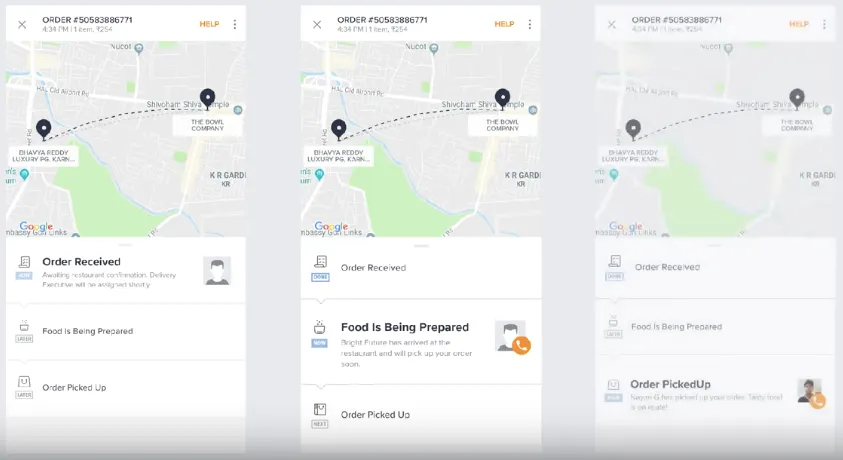

Introduction
These next big wave of users is coming not from the west but from the young, educated youth of India with access to cheap data plans and speaking many different languages. This article talks about the design patterns to keep in mind when designing for the next billion internet users.
Of late, we’ve been working with a few clients that have customer bases in tier-3 and tier-4 cities in India. This trend is an important one to note as it represents a huge population that has so far been untouched by technology. This group is significant for yet another reason because it also represents the migrant populations that travel to bigger cities for work. So we began working on a framework that aims to help design applications for the next billion users.
To begin with, let’s understand who we are designing for a little better. All the descriptions can be debated but the objective is to describe the majority of users:
- The user may be young or old but not very tech savvy.
- Smartphones are the first computing platforms they’ve handled.
- They use Android phones.
- Their income levels could vary quite greatly as this is not a group defined by economics.
- They seek technical help from other friends and family members.
- They best understand new ideas through metaphorical comparison with real-world concepts.
There are a number of dos and don’ts to keep in mind and if we went through all of them, it would simply make for a very long day. So let’s discuss the most important things here:
#1 — USING PERMANENT POSITIONS FOR OBJECTS
In the real world, different objects occupy different spaces. This is starkly different in the digital world where the same area of the screen is occupied by different “objects” at different times. This is a huge hurdle to overcome for a new user. One way to design for this kind of user is to allocate spaces within the screens for certain types of actions.
For example, you can allocate the bottom right of the application for confirmatory actions such as Save, Submit, Okay or Approve. The other corner of the screen can be allocated for the negative actions such as Cancel, Disapprove, Reject, etc. Having a permanent place on the screen for certain types of functions helps build a relationship between the position and the action. In the long run, it also helps build muscle memory for the required kinds of actions. The users, then, can also guess where to tap on a screen that they may have never encountered yet.

#2 — AVOID SCROLLING
The second thing to do is to avoid scrolling. Scrolling by itself isn’t something that this group of users will find intuitive. If possible, present all the information on multiple screens instead, with a progress button that takes them through each of them.
But if you must use scrolling, provide the user with some kind of hint which will allow them to understand that more of the screen is available below. Make sure that the information on a screen doesn’t “cut” exactly where the physical screen ends and instead lay out the screen such that there’s a portion of what’s below peeking above the bottom of the screen. Another hint that can be provided is to show an illustration of a finger tapping and dragging the screen.

#3 — USE TRANSITIONS WHEN GOING BETWEEN SCREENS
The third thing to keep in mind is to use transitions when going between screens. When the same real estate is being used by different sets of information, it helps a user to understand that the same space is being used by a new lot of information if you use some kind of transition animation between the screens. If you slide a screen left, the user will know that the first set of screens has moved to the left to make space for the new screen. In addition, the user will also know that if they “go left”, they will be able to see the old screen.
What doesn’t work is a quick switch from one screen to another because that doesn’t allow a user to switch contexts seamlessly. This is one of those principles that actually makes sense to use for all users and not just this group, but it is essential for this particular group.
#4 — USE SKEUOMORPHISM
It is also recommended that you use skeuomorphism. If you’ve never heard the term before, it’s a fancy way of saying that the interface should use depictions of real-world objects. For example, if there’s a need to indicate a delete function, the functionality should be depicted using an icon that resembles an eraser or a trash can as opposed to an “X” which would make sense to someone familiar with technology but not to the others.

#5 — BUILD USER CONFIDENCE
As interface designers, we must also work hard to build the confidence of digital novices. These kinds of users will be worried about making mistakes, especially when it comes to using applications related to money. It would be good to let them know what they need to have available in order to perform the task and to also let them know the steps involved to complete the task.
Additionally, messaging on the screen can let the user know that they are doing a good job with each step. This will encourage them to go from step to step in a simple manner. A summary step that indicates all their inputs and decisions before performing the task will be required in order to allay any fears that the user may have.
For tasks that require the users to make multiple decisions, try and keep it to one decision per screen so the user can focus on performing that one action as accurately as possible. A mini celebration after the task is performed correctly will also reinforce the user’s confidence in being able to perform it the next time.

#6 — USE VOICE INTERFACES WHEN POSSIBLE
The most important tool in the basket is the use of voice interfaces. If there is a possibility to use them within the application, the return on investment is extremely high. We frequently underestimate the amount of learning we have gone through in getting used to GUI or touch-based interfaces. While tech-savvy users get through each of these steps quickly and seamlessly, it is a huge hurdle to learn even basic actions like scrolling, copy/paste functions, navigating within screens, etc., for those who haven’t grown up with technology.
But voice interfaces bridge these gaps seamlessly. Everyone knows what they want to achieve and most people can put it into words easily. As designers, we could use technologies like Slang or Dialogflow which allow you to infuse voice interfaces within GUI, creating dual-modal interfaces. In this way, voice can become assistive and allow users to handle applications even if they aren’t very well-versed in GUI-based ones.

Conclusion
So these are just some of the many things one needs to think about when designing for the next billion users from India. This is by no means meant to be an exhaustive list but something to get you started in thinking about how design can help bridge the technological gap that’s forming in our society.